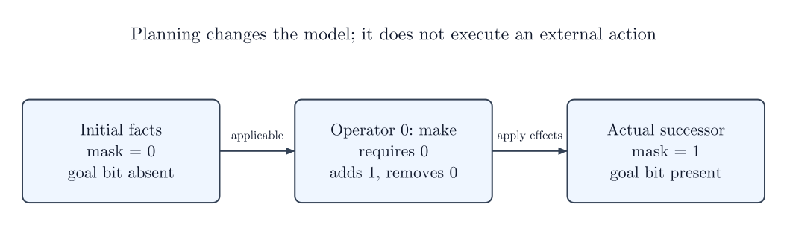
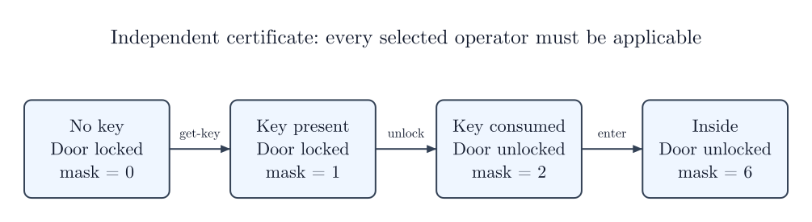
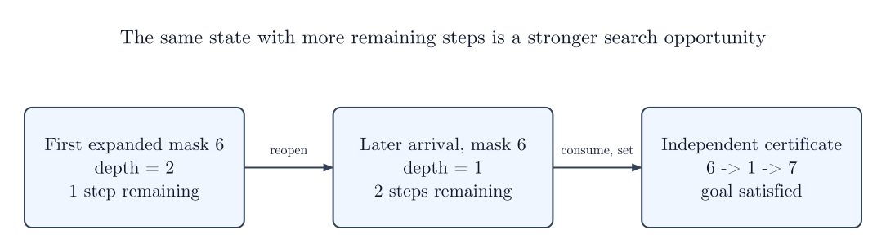
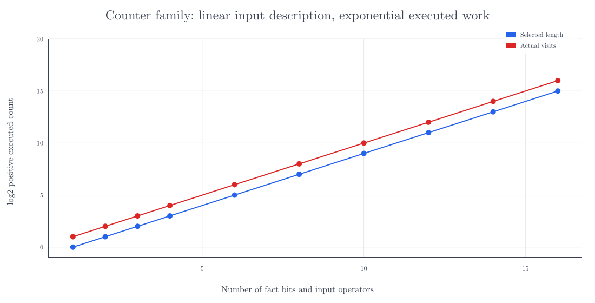
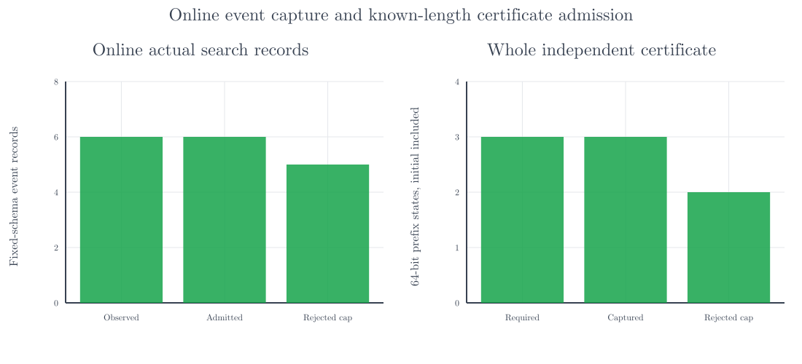

General Problem Solver: finite facts, executable plans and safe depth limits
Abstract
Find a sequence of applicable actions that changes an initial set of facts into a state satisfying a goal, while limiting the number of actions. Search can branch, revisit states and spend its step budget on an unproductive route. Datamunge’s General Problem Solver API represents facts as 64-bit masks and searches in operator order. This report starts with the original one-action example, checks a key-and-door plan independently and explains why a state reached with more remaining budget must be reopened. A binary-counter family measures actual exponential search work, while explicit record and certificate limits make the ownership and resource contracts visible.
Start with the original one-action problem
Initially fact 0 is false. The goal requires it, and an always-applicable operator named make adds it. There is one selected action and the terminal mask is 1. The native trace records six control-flow events: visit the root, test the operator, apply it, visit the successor, accept the goal, then propagate success. The original program merely returned exit status 0; the executed table below makes the same successful result inspectable.
#include <dm/dm.hpp>
namespace dm=datamunge;
int main(){
std::filesystem::create_directories("build");
const std::vector<dm::algorithms::PlanningAction>a{{"make",0,1,0}};
const auto t=dm::algorithms::general_problem_solver_trace(0,1,a,32,6);const auto legacy=dm::algorithms::general_problem_solver(0,1,a);
std::print("| event | state | depth | next state |\n| --- | ---: | ---: | ---: |\n");
for(const auto&e:t.events)std::print("| {} | {} | {} | {} |\n",dm::algorithms::planning_event_name(e.kind),e.state,e.depth,e.next_state);
std::print("\nFound {}; action {}; index {}; final mask {}; visits {}; checks {}; records {}; legacy result identical {}.\n",t.run.result.found,t.run.result.actions.at(0),t.run.action_indices.at(0),t.run.result.final_state,t.run.work.visits,t.run.work.operator_checks,t.events.size(),legacy.actions==t.run.result.actions&&legacy.final_state==t.run.result.final_state);
const auto applied=std::find_if(t.events.begin(),t.events.end(),[](const auto&e){return e.kind==dm::algorithms::PlanningEventKind::apply;});
dm::graphics::Diagram d(63,1100);dm::graphics::DiagramNodeStyle box;box.width=4.2;box.height=2.2;box.font_size=22;
d.node("start",{0,0},std::format("Initial facts\nmask = {}\ngoal bit absent",applied->state),box)
.node("action",{5.8,0},std::format("Operator {}: {}\nrequires {}\nadds {}, removes {}",applied->action_index,a[0].name,a[0].require,a[0].add,a[0].remove),box)
.node("goal",{11.6,0},std::format("Actual successor\nmask = {}\ngoal bit present",applied->next_state),box)
.edge("start","action","applicable").edge("action","goal","apply effects")
.text({5.8,2.5},"Planning changes the model; it does not execute an external action",24).save_svg("build/planner_first.svg");
if(!legacy.found||t.events.size()!=6||t.run.action_indices!=std::vector<std::size_t>{0})throw std::runtime_error("original make plan");
}| event | state | depth | next state |
|---|---|---|---|
| visit | 0 | 0 | 0 |
| test | 0 | 0 | 0 |
| apply | 0 | 0 | 1 |
| visit | 1 | 1 | 1 |
| goal | 1 | 1 | 1 |
| finish | 0 | 0 | 0 |
Found true; action make; index 0; final mask 1; visits 2; checks 1; records 6; legacy result identical true.

A finite fact model is smaller than historical GPS or full STRIPS
A mask s encodes a set of currently true facts. Every bit, including bit 63, is available. An operator has positive preconditions R, added facts A and deleted facts D. A goal mask G is a conjunction: every set bit must hold, while other facts may remain present. The transition rules are
Deletion precedes addition, so an overlapping effect ends present. An empty precondition is always satisfied, and a zero goal succeeds initially. There are no negative preconditions, logical variables or hidden consistency constraints: if two fact bits ought to be mutually exclusive, the supplied effects must enforce that model. Operator names are labels; positions in the input vector identify actions even when labels are empty or duplicated.
[Fikes and Nilsson’s original STRIPS paper, IJCAI 1971, pages 608–619](https://ijcai.org/proceedings/1971/63), Section II.A–B, describes preconditions and add/delete effects in a richer first-order model. It also uses goal differences to select relevant operators and generate subgoals. This library adapts grounded fact effects but uses ordinary forward DFS in input order. Its historical API name does not imply an implementation of original GPS means–ends reasoning or a first-order theorem prover. The [original paper, printed 609](https://ijcai.org/proceedings/1971/0063.pdf) makes that distinction clear. Here an operator application changes a state mask; no robot, file, network or other external action is executed.
Check a key-and-door plan independently
Use bit 0 for holding a key, bit 1 for an unlocked door and bit 2 for being inside. Getting a key adds bit 0. Unlocking requires the key, deletes that key bit and adds the unlocked bit. Entering requires the unlocked bit and adds the inside bit. The input list is ordered enter, unlock, get-key, so forward search tests unavailable actions before finding the first applicable one. This ordering is explicit; no goal-relevance heuristic rearranges it.
The native checker executes the returned operator indices independently of the search and retains every reached prefix state. It verifies applicability and goal satisfaction; it does not certify shortestness or impose a step budget.
#include <dm/dm.hpp>
namespace dm=datamunge;
int main(){
std::filesystem::create_directories("build");
const std::vector<dm::algorithms::PlanningAction>a{{"enter",2,4,0},{"unlock",1,2,1},{"get-key",0,1,0}};
const auto r=dm::algorithms::general_problem_solver_run(0,4,a,3);const auto c=dm::algorithms::check_planning_plan(0,4,a,r.action_indices,4);
std::print("| step | operator index | action | state before | state after |\n| ---: | ---: | --- | ---: | ---: |\n");
for(std::size_t k=0;k<r.action_indices.size();++k){const auto i=r.action_indices[k];std::print("| {} | {} | {} | {} | {} |\n",k+1,i,a[i].name,c.states[k],c.states[k+1]);}
const auto bad=dm::algorithms::check_planning_plan(0,4,a,{0},2);
std::print("\nPlan applicable {}; reaches goals {}; final mask {}; applications {}; search checks {}; unavailable-enter certificate applicable {}; its retained states {}.\n",c.applicable,c.reaches_goals,c.final_state,c.applied,r.work.operator_checks,bad.applicable,bad.states.size());
dm::graphics::Diagram d(58,1100);dm::graphics::DiagramNodeStyle box;box.width=3.1;box.height=2.1;box.font_size=22;
const std::array<std::string,4>labels{"No key\nDoor locked","Key present\nDoor locked","Key consumed\nDoor unlocked","Inside\nDoor unlocked"};
for(std::size_t k=0;k<c.states.size();++k){const auto id=std::to_string(k);d.node(id,{double(k)*4.4,0},std::format("{}\nmask = {}",labels[k],c.states[k]),box);if(k)d.edge(std::to_string(k-1),id,a[r.action_indices[k-1]].name);}
d.text({6.6,2.4},"Independent certificate: every selected operator must be applicable",25).save_svg("build/planner_door.svg");
if(!r.result.found||!c.applicable||!c.reaches_goals||c.states!=std::vector<std::uint64_t>{0,1,2,6}||bad.applicable)throw std::runtime_error("independent door certificate");
}| step | operator index | action | state before | state after |
|---|---|---|---|---|
| 1 | 2 | get-key | 0 | 1 |
| 2 | 1 | unlock | 1 | 2 |
| 3 | 0 | enter | 2 | 6 |
Plan applicable true; reaches goals true; final mask 6; applications 3; search checks 6; unavailable-enter certificate applicable false; its retained states 1.

Why a global visited set can break a depth-limited search
A repeated state may be reached at a different depth. If the first route uses two of three available steps and a later route uses only one, the later route has more remaining budget. Rejecting it solely because the mask was seen can lose a valid bounded plan.
The following three-operator example was reduced from an independently verified counterexample found during this conversion. Start at mask 4, require goal bits 3, and allow at most three actions. clear removes bit 2; set adds bits 1 and 2 and removes bit 1 first; consume requires bit 1, deletes the three low bits and adds bit 0. Add-wins makes set’s bit 1 present after its overlapping effects.
Input order first explores clear, then set: state 4→0→6 reaches 6 at depth 2. That branch cannot finish in its one remaining step. Later, set directly gives state 4→6 at depth 1. Reopening it exposes the valid path 4→6→1→7, using set, consume, set. The old state-only visited implementation incorrectly returned failure at budget 3. The corrected implementation records the smallest expansion depth of each state and reopens only at a strictly smaller depth.
#include <dm/dm.hpp>
namespace dm=datamunge;
int main(){
std::filesystem::create_directories("build");
const std::vector<dm::algorithms::PlanningAction>a{{"clear",0,0,4},{"set",0,6,2},{"consume",2,1,7}};
std::print("| maximum steps | found | selected length | reopenings | operator checks |\n| ---: | --- | ---: | ---: | ---: |\n");
for(std::size_t budget=0;budget<=6;++budget){const auto r=dm::algorithms::general_problem_solver_run(4,3,a,budget);std::print("| {} | {} | {} | {} | {} |\n",budget,r.result.found,r.action_indices.size(),r.work.reopenings,r.work.operator_checks);}
const auto t=dm::algorithms::general_problem_solver_trace(4,3,a,3,0);const auto c=dm::algorithms::check_planning_plan(4,3,a,t.run.action_indices,4);
const auto e=std::find_if(t.events.begin(),t.events.end(),[](const auto&e){return e.kind==dm::algorithms::PlanningEventKind::reopen&&e.state==6&&e.depth==1;});if(e==t.events.end())throw std::runtime_error("missing actual reopen");
std::print("\nActual reopened mask {}; previous depth {}; new depth {}; previous remaining budget {}; new remaining budget {}.\n",e->state,e->previous_depth,e->depth,3-e->previous_depth,3-e->depth);
std::print("Certified plan indices ({}, {}, {}); states ({}, {}, {}, {}); final goals satisfied {}.\n",t.run.action_indices[0],t.run.action_indices[1],t.run.action_indices[2],c.states[0],c.states[1],c.states[2],c.states[3],c.reaches_goals);
dm::graphics::Diagram d(64,1100);dm::graphics::DiagramNodeStyle box;box.width=4.2;box.height=2.3;box.font_size=22;
d.node("deep",{0,0},std::format("First expanded mask {}\ndepth = {}\n{} step remaining",e->state,e->previous_depth,3-e->previous_depth),box)
.node("shallow",{5.9,0},std::format("Later arrival, mask {}\ndepth = {}\n{} steps remaining",e->state,e->depth,3-e->depth),box)
.node("goal",{11.8,0},std::format("Independent certificate\n{} -> {} -> {}\ngoal satisfied",c.states[1],c.states[2],c.states[3]),box)
.edge("deep","shallow","reopen").edge("shallow","goal","consume, set")
.text({5.9,2.5},"The same state with more remaining steps is a stronger search opportunity",24).save_svg("build/planner_reopen.svg");
if(!t.run.result.found||!c.applicable||!c.reaches_goals||c.states!=std::vector<std::uint64_t>{4,6,1,7})throw std::runtime_error("corrected bounded plan");
}| maximum steps | found | selected length | reopenings | operator checks |
|---|---|---|---|---|
| 0 | false | 0 | 0 | 0 |
| 1 | false | 0 | 0 | 3 |
| 2 | false | 0 | 0 | 9 |
| 3 | true | 3 | 1 | 16 |
| 4 | true | 4 | 0 | 11 |
| 5 | true | 5 | 0 | 9 |
| 6 | true | 5 | 0 | 9 |
Actual reopened mask 6; previous depth 2; new depth 1; previous remaining budget 1; new remaining budget 2. Certified plan indices (1, 2, 1); states (4, 6, 1, 7); final goals satisfied true.

State dominance gives safe pruning, not shortest-path search
For budget K, let d(s) be the smallest depth at which a nonterminal state s has been expanded. A later arrival at depth d is dominated if d≥d(s): any suffix available with K−d steps is also available with K−d(s) steps. If d<d(s), that reason no longer applies and the state is reopened. Goal testing comes first, then the depth limit, then the dominance test, so a goal exactly at K is accepted. A non-goal cutoff state is not inserted into the expansion map.
Soundness follows by induction: each selected action passes its preconditions, its transition preserves precisely the undeleted facts plus additions, and the returned terminal state passes the goal conjunction within K steps. Bounded completeness follows from the dominance argument: a pruned occurrence can be replaced by a no-deeper expansion with at least the same available suffix budget. Following such replacements along any feasible bounded path cannot remove its goal opportunity. The finite state space and strictly improving stored depths make the search terminate, subject to available memory and representable counters. This does not imply a shortest returned plan. DFS stops at its first successful route in operator order; the table’s budgets 4 and 5 can select four- and five-step plans even though a three-step plan exists.
The correction preserves the legacy record layouts, default 32-step budget, operator order and add-wins semantics. Against 397686 frozen cases and an independent breadth-first oracle, it recovers two old false negatives. One formerly successful case selects a different valid route, three steps instead of two; the other 397683 results are identical. This is an explicit consequence of correcting pruning, not a promise of shortestness. The original one-action example is unchanged.
A small description can require exponentially many applications
The native binary-counter family has b operators. Operator k requires all lower bits, clears those bits and sets bit k. Already-set bits can cause backward transitions because the model has no negative preconditions. Input order tests low bits first; equal-or-deeper repeated states are pruned.
From zero, the first successful path visits integer masks 0,1,2,…,G with G=2^(b−1), the first state holding the highest goal bit. An applicable carry at a previously unset bit increases the numeric state by exactly 1; an already-set bit does not increase it. Thus no plan can reach G in fewer than G applications, and the observed sequential path attains that lower bound. This is a property of this constructed family, not a general shortestness guarantee.
For a budget of exactly G, the native counters satisfy
At state i, search tests one plus the number of trailing one bits before the next advancing carry. Summing those tests over 0≤i<G gives 2G−1. Every tested carry is applicable, but earlier backward/self-loop children fail; there are G−1 such backtracks. Each child gives one visit, in addition to the root. On the last non-goal state, the b−1 backward children reach the exact depth limit and are counted as cutoffs before the repeat check; the other G−b are repeat prunes. All these counters exclude trace capture, copies and hashing internals.
#include <dm/dm.hpp>
namespace dm=datamunge;
int main(){
std::filesystem::create_directories("build");
std::vector<double>bits_x,length_y,visits_y;std::print("| fact bits | plan length | visits | operator checks | repeat prunes | depth cutoffs | peak heap frames |\n| ---: | ---: | ---: | ---: | ---: | ---: | ---: |\n");
std::size_t last_states=0;bool certified=false;
for(std::size_t bits:std::array<std::size_t,10>{1,2,3,4,6,8,10,12,14,16}){const auto goal=std::uint64_t{1}<<(bits-1);const auto a=dm::algorithms::planning_binary_counter(bits);const auto r=dm::algorithms::general_problem_solver_run(0,goal,a,goal);const auto c=dm::algorithms::check_planning_plan(0,goal,a,r.action_indices,goal+1);const auto&w=r.work;
std::print("| {} | {} | {} | {} | {} | {} | {} |\n",bits,r.action_indices.size(),w.visits,w.operator_checks,w.repeat_prunes,w.depth_cutoffs,w.peak_stack);bits_x.push_back(bits);length_y.push_back(std::log2(double(r.action_indices.size())));visits_y.push_back(std::log2(double(w.visits)));last_states=c.states.size();certified=c.applicable&&c.reaches_goals&&c.final_state==goal;
if(!r.result.found||!certified||r.action_indices.size()!=goal||w.operator_checks!=2*goal-1||w.visits!=2*goal)throw std::runtime_error("counter-family closed cost");
}
std::print("\nLargest checked prefix states {}; independent goal certificate {}; the search uses heap frames rather than recursive C++ calls.\n",last_states,certified);
auto plot=dm::graphics::RPlot::create();plot.lines(bits_x,length_y,"Selected length",{37,99,235},2).points(bits_x,length_y,"",{37,99,235},5)
.lines(bits_x,visits_y,"Actual visits",{220,38,38},2).points(bits_x,visits_y,"",{220,38,38},5).legend({"Selected length","Actual visits"},{{37,99,235},{220,38,38}})
.title("Counter family: linear input description, exponential executed work").xlab("Number of fact bits and input operators").ylab("log2 positive executed count").y_limits(-1,20).size(1100,560).save_svg("build/planner_scaling.svg");
}| fact bits | plan length | visits | operator checks | repeat prunes | depth cutoffs | peak heap frames |
|---|---|---|---|---|---|---|
| 1 | 1 | 2 | 1 | 0 | 0 | 2 |
| 2 | 2 | 4 | 3 | 0 | 1 | 3 |
| 3 | 4 | 8 | 7 | 1 | 2 | 5 |
| 4 | 8 | 16 | 15 | 4 | 3 | 9 |
| 6 | 32 | 64 | 63 | 26 | 5 | 33 |
| 8 | 128 | 256 | 255 | 120 | 7 | 129 |
| 10 | 512 | 1024 | 1023 | 502 | 9 | 513 |
| 12 | 2048 | 4096 | 4095 | 2036 | 11 | 2049 |
| 14 | 8192 | 16384 | 16383 | 8178 | 13 | 8193 |
| 16 | 32768 | 65536 | 65535 | 32752 | 15 | 32769 |
Largest checked prefix states 32769; independent goal certificate true; the search uses heap frames rather than recursive C++ calls.

With m operators and S reachable states, each expanded state can be reopened only at a strictly smaller depth. A cycle cannot improve the depth of an active ancestor, so stored depths are below both K+1 and S. This gives an expected bound of O(m S min(K+1,S)) precondition checks with constant-width bit operations and expected constant-time hashing. Ordinary working storage is O(S+min(K,S)) frame/map records, plus the returned operator indices and copied name bytes. S itself can be exponential in the number of facts. No table for all 2^64 possible masks is preallocated, and replacing recursion with heap frames does not make exponential search cheap.
Online event records and whole certificate states are different quotas
Search history size is unknown before exploring the domain. The trace therefore checks each actual next event against an online cap: default one million records, zero disables only that optional quota. One record has the fixed PlanningEvent schema; it is not one numeric entry or byte. Owned input operators and their names, root/work metadata, final ordinary output, working stack/map and allocator storage are excluded. This is not a peak RAM limit. The final finish records count too, and exceeding the cap throws without returning a partial trace.
The independent checker knows the proposed sequence length p in advance. It validates every operator index first, then admits the complete p+1 state bound, including the initial state, before performing any transition or allocating its history. A precondition failure can leave a shorter valid prefix, but receives no early-failure quota discount. It reports applicability and whether that prefix satisfies the goal separately. A true goal flag alone does not make a sequence with a failed action applicable.
#include <dm/dm.hpp>
namespace dm=datamunge;
int main(){
std::filesystem::create_directories("build");
const std::vector<dm::algorithms::PlanningAction>make{{"make",0,1,0}};const auto observed=dm::algorithms::general_problem_solver_trace(0,1,make,32,0);bool event_denied=false;
try{(void)dm::algorithms::general_problem_solver_trace(0,1,make,32,5);}catch(const std::length_error&){event_denied=true;}
auto t=dm::algorithms::general_problem_solver_trace(0,1,make,32,6);t.operators[0].name="mutated";t.events[2].next_state=999;const bool owned=t.run.result.actions[0]=="make"&&t.run.result.final_state==1&&t.events[3].state==1;
const auto high=std::uint64_t{1}<<63;const std::vector<dm::algorithms::PlanningAction>a{{"same",0,high,high},{"same",high,1,high}};const auto r=dm::algorithms::general_problem_solver_run(0,1,a,2);const auto c=dm::algorithms::check_planning_plan(0,1,a,r.action_indices,3);
bool certificate_denied=false,index_first=false;try{(void)dm::algorithms::check_planning_plan(0,1,a,r.action_indices,2);}catch(const std::length_error&){certificate_denied=true;}try{(void)dm::algorithms::check_planning_plan(0,1,a,{999},1);}catch(const std::out_of_range&){index_first=true;}
const auto failed=dm::algorithms::check_planning_plan(0,1,a,{1},2);const auto initial=dm::algorithms::general_problem_solver_trace(high,high,{},0,2);const auto zero=dm::algorithms::general_problem_solver_trace(0,1,make,0,2);
std::print("| resource | observed or required | admitted or captured | rejected cap | rejection observed |\n| --- | ---: | ---: | ---: | --- |\n| Actual search-event records | {} | {} | 5 | {} |\n| Whole certificate states | {} | {} | 2 | {} |\n",observed.events.size(),t.events.size(),event_denied,r.action_indices.size()+1,c.states.size(),certificate_denied);
std::print("\nDuplicate names {}; certified indices ({}, {}); high-bit prefix states ({:#018x}, {:#018x}, {:#018x}); applicable {}; goals reached {}.\n",a[0].name==a[1].name,r.action_indices[0],r.action_indices[1],c.states[0],c.states[1],c.states[2],c.applicable,c.reaches_goals);
std::print("Independent owned copies {}; index validation before quota {}; invalid-precondition plan applicable {}; retained prefix states {}; initial-goal events {}; zero-budget failure events {}.\n",owned,index_first,failed.applicable,failed.states.size(),initial.events.size(),zero.events.size());
auto eventplot=dm::graphics::RPlot::barplot({double(observed.events.size()),double(t.events.size()),5.},{"Observed","Admitted","Rejected cap"});eventplot.title("Online actual search records").xlab("").ylab("Fixed-schema event records").y_limits(0,8);
auto certplot=dm::graphics::RPlot::barplot({double(r.action_indices.size()+1),double(c.states.size()),2.},{"Required","Captured","Rejected cap"});certplot.title("Whole independent certificate").xlab("").ylab("64-bit prefix states, initial included").y_limits(0,4);
dm::graphics::RLayout::create(1,2).add(eventplot).add(certplot).size(1100,500).title("Online event capture and known-length certificate admission").fit_panels().save_svg("build/planner_controls.svg");
if(!event_denied||!certificate_denied||!index_first||!owned||!c.applicable||!c.reaches_goals||failed.applicable)throw std::runtime_error("record, certificate and identity controls");
}| resource | observed or required | admitted or captured | rejected cap | rejection observed |
|---|---|---|---|---|
| Actual search-event records | 6 | 6 | 5 | true |
| Whole certificate states | 3 | 3 | 2 | true |
Duplicate names true; certified indices (0, 1); high-bit prefix states (0x0000000000000000, 0x8000000000000000, 0x0000000000000001); applicable true; goals reached true. Independent owned copies true; index validation before quota true; invalid-precondition plan applicable false; retained prefix states 1; initial-goal events 2; zero-budget failure events 2.

Actual search events explain both successful plans and the corrected depth-limit failure. Independent certificates separate executable actions from a found flag, and operator indices preserve identity when names do not. The counter family exposes exponential work despite a short description and a heap-based traversal. These finite constructed domains directly test the planning model; an external dataset is unnecessary, and none of the counts promises shortest plans or fast execution for arbitrary fact systems.